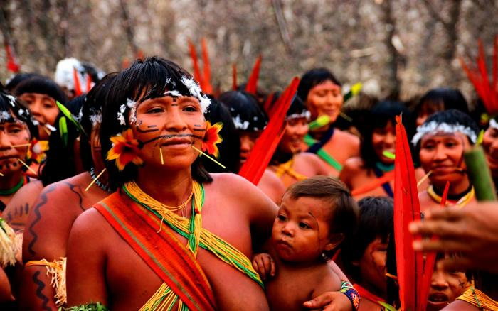

Os Yanomami são um povo indígena que habita a região amazônica, na fronteira entre o Brasil e a Venezuela. Eles são considerados um dos últimos povos isolados da região e possuem uma cultura e história ricas que remontam a milhares de anos.
Os Yanomami são aproximadamente 35.000 indivíduos, divididos entre o Brasil e a Venezuela. Suas terras estão situadas em uma área de cerca de 9,6 milhões de hectares na Amazônia, abrangendo montanhas, rios e florestas tropicais.
A sociedade Yanomami é organizada em grupos familiares extensos, chamados de "shabonos". Cada shabono é composto por várias famílias relacionadas entre si e é liderado por um xamã ou líder espiritual. A comunidade Yanomami valoriza a igualdade e a cooperação, tomando decisões através de um sistema de consenso.
A principal forma de subsistência dos Yanomami é a caça, pesca e coleta de frutas e vegetais na floresta amazônica. Eles têm um conhecimento profundo das plantas e ervas medicinais, usando-as para tratar doenças e ferimentos. Além disso, praticam a agricultura itinerante, onde derrubam e queimam pequenas áreas de floresta para cultivar alimentos como mandioca, banana e milho.
A religião e a espiritualidade desempenham um papel fundamental na vida dos Yanomami. Eles acreditam na existência de seres espirituais que influenciam o mundo natural. Xamãs desempenham um papel importante como intermediários entre o mundo humano e o mundo espiritual, curando doenças, conduzindo rituais e mantendo o equilíbrio entre os seres.
Ao longo da história, os Yanomami têm enfrentado diversos desafios, incluindo invasões de terras, exploração de recursos naturais, doenças trazidas por não indígenas e conflitos com garimpeiros ilegais. Esses fatores têm causado impactos significativos em sua saúde, ambiente e modo de vida tradicional.
Os Yanomami têm lutado por seus direitos e pela proteção de suas terras. Organizações indígenas, ativistas e governos têm trabalhado em conjunto para garantir a demarcação e proteção das terras Yanomami, bem como o respeito à sua cultura e autonomia.
Os Yanomami são um povo resiliente e valioso, que contribui para a diversidade cultural e a preservação da Amazônia. A conscientização sobre sua história, desafios e direitos é fundamental para apoiar sua luta pela sobrevivência e o respeito à sua cultura ancestral.